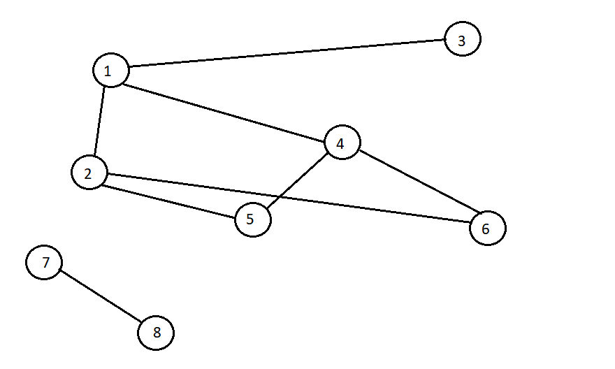

Probleme teoria grafurilor
Probleme grafuri neorientate:
1. Rezolvă următoarele cerințe pe graful din figura alăturată:
- Enumeră nodurile de grad maxim
- Scrie listele de adiacență ale grafului dat
- Scrie un ciclu elementar de lungime maxima
- Care este numărul minim de muchii de eliminat astfel încât graful rezultat să fie eulerian? Precizează o posibilă soluție.
- Câte subgrafuri complete, fără vârfuri izolate conține graful dat?
- Scrie linia corespunzătoare nodului 4 din matricea de adiacență.
- Câte muchii trebuie adăugate grafului astfel încât să devină graf complet?
- Care sunt componentele conexe ale subgrafului indus de vârfurile de grad impar?

2. Fie G un graf neorientat cu 30 de vârfuri reprezentat printr-o matrice de adiacență cu 24 de valori nenule. Graful poate fi format din cel puțin ... și cel mult ... componente conexe.
3. Fie G un graf cu 25 de muchii, fără noduri izolate. Numărul maxim de noduri din graf este ...
4. Câte grafuri neorientate cu 10 noduri se pot forma astfel încât nodul 1 să fie izolat?
5. Care este numărul minim de noduri dintr-un graf neorientat cu 18 muchii, fără vârfuri izolate, format din trei componente conexe? Dar numărul maxim de noduri?
6. Într-un graf neorientat conex, distanța dintre două noduri u și v se definește ca fiind
lungimea minimă a unui lanț de la u la v. Puterea unui nod v se definește ca fiind suma
distanțelor de la v la celelalte noduri. Care este valoarea maximă pe care o poate avea puterea
unui nod într-un graf conex neorientat cu n>1 noduri?
